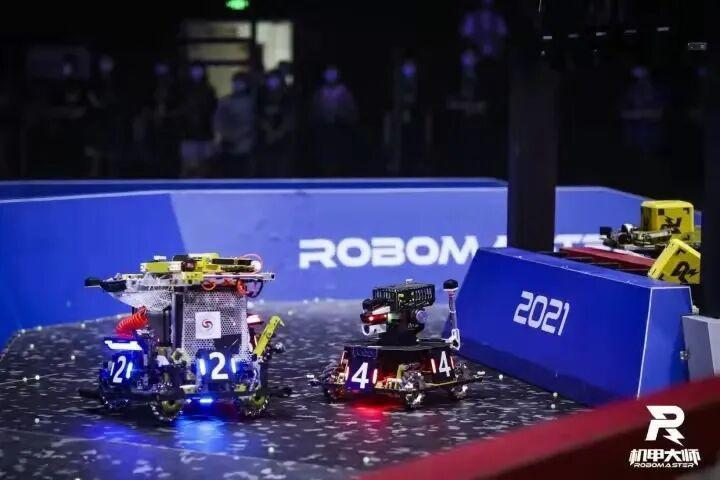
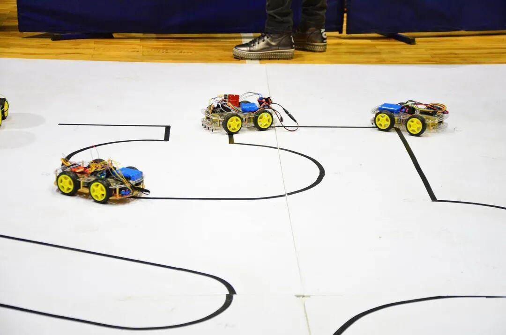
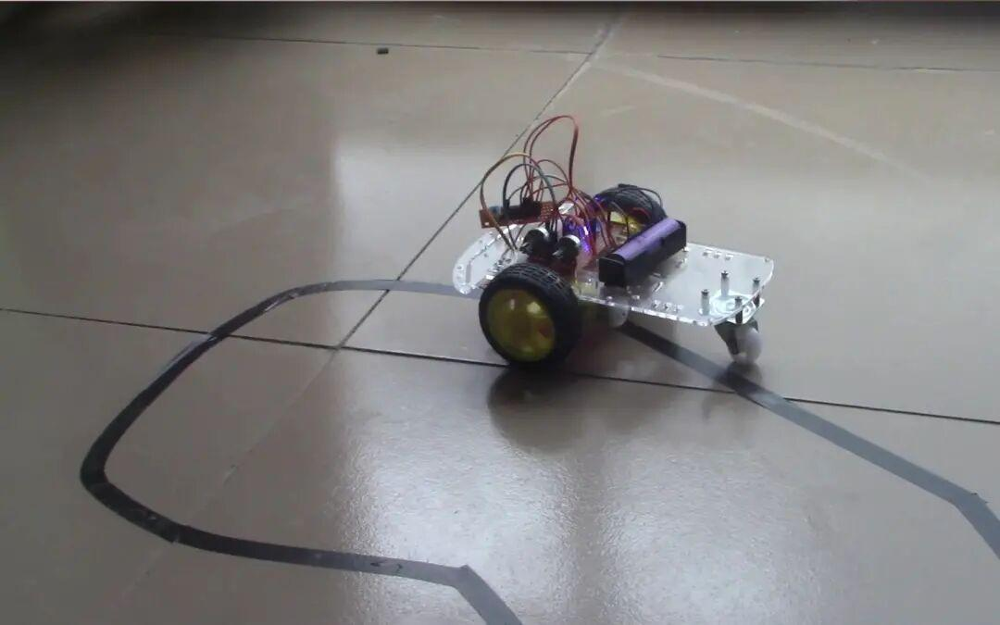
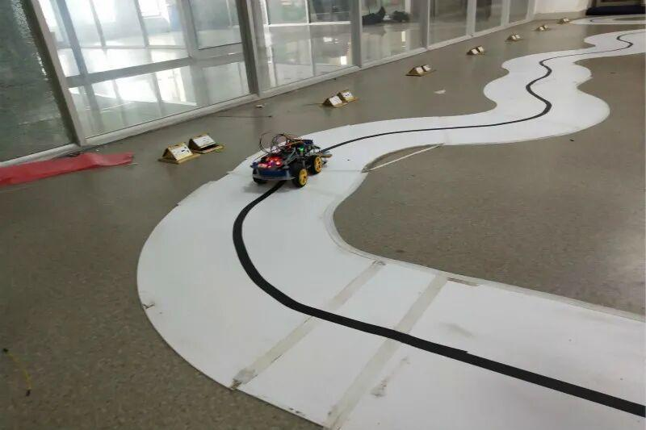
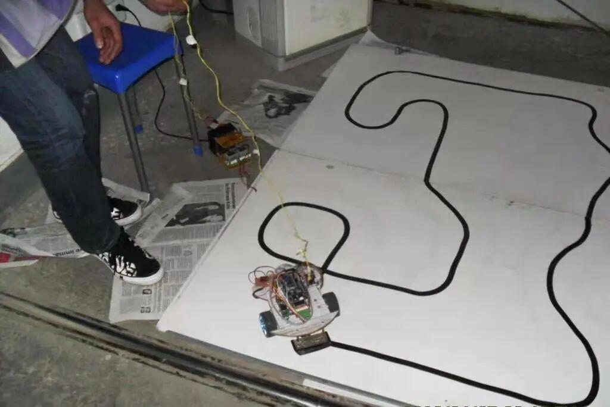

循迹小车对抗赛


当机械与零件碰撞，将会摩擦出怎样的火花？
当思维与知识交互，将会迸发怎样的灵感？
当群英汇聚，高手云集，谁能旗开得胜？
加入我们的比赛，来近距离地感受这一切吧！
6月11日，我们将在小足球场摆台。
而我们的报名截止时间是6月18日。
心动了吗？赶快来摆台处找我们吧。
亦或是加入我们比赛QQ群：1063226473了解详情



2021年，欣逢伟大的中国共产党成立一百周年，在这个特殊而意义重大的时间点，电子技术与应用协会特围绕“绽放青春活力，庆祝建党百年”的主题开展比赛活动。
本次比赛的主题是“循迹小车对抗赛”，参赛者需要操控循迹小车“重走长征路”。旨在使青年大学生深入了解中国共产党领导人民进行的艰苦卓绝的奋起与斗争历程






报名时间：6月11日8:00——6月18日20:00
报名地点：文体中心210
试场地点：文体中心三楼
竞赛时间：6月19日8:00——6月20日20:00
竞赛地点：文体中心三楼
竞赛面向对象：沈阳理工大学全体在校生


当代青年大学生与祖国的强国进程同生共长，应该将个人前程与国家及世界命运联系在一起，将书墨中的智慧转化为匡时济世的能力，为激励青年大学生努力学习知识技能并付诸实践，逐渐成为能担大任的中国少年。
此次比赛，大一学生参加即可获得0.5分第二课堂学分，成绩优异者还会有各种精美礼品，获得名次更可获得综测学分。
心动了吗？赶快来报名吧！
6月11日8：00—17:00，我们在摆台处等你来。
图片|信息部
排版|李现亮